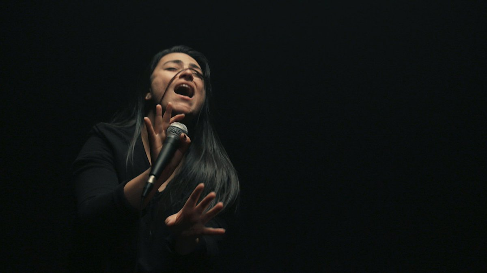
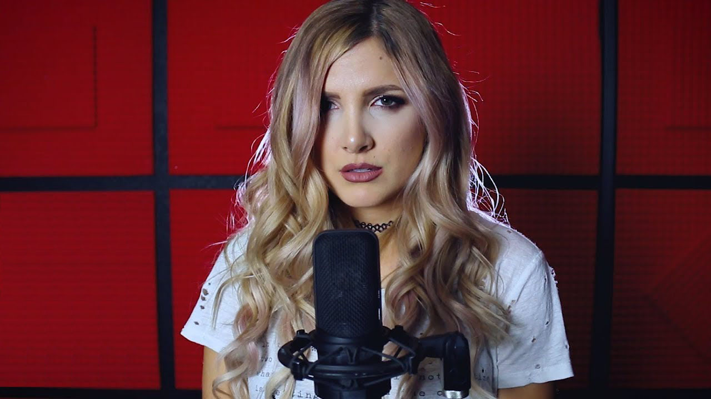

" I started singing even before I knew how to talk.
My mother was always incredibly supportive, and she was the one who introduced
me to music. My childhood was the ignition of my love for music.
During my teenage years, I started taking singing and guitar lessons and fell
in love with rock music. Right now, I’m a full-time musician, YouTuber,
songwriter and producer. I release covers every week of songs I love
(mainly rock songs), I’ve written music for films and produce my own
original material. Music is a strange and wonderful thing that I can’t live
without, and I’m fortunate enough to be able to share it with you. "
Profession
Musician
Country
Brazil
Age
25
Gender
Rock
Band
Soloist

Lauren Babic
" I sing in 2 bands: Red Handed Denial and CrazyEightyEight.
So far on my musical adventures, I've recorded two albums,two EPs,
and two singles with RHD + one album and three EPs with C88 (all of which
you can find digitally on iTunes, Apple Music, Spotify, Bandcamp,
and also CDs and vinyl if you're into that). I'm currently working on a
solo pop EP, which will be released in 2020. I also make Youtube videos
and record covers, something that at first I did for fun to practice
vocal production and singing, but over time has turned into something
much more than I could have ever imagined. "
Profession
Musician
Country
Canada
Age
30
Gender
Heavy Metal
Bands
CrazyEightyEight
Red Handed Denial

Addie Nicole
" Hailing from Phoenix, Arizona, Halocene has been an
unstoppable force of hard work and passion since 2008. Having toured from
coast to coast in a beat up van, opening for bands like Blink 182,
Fall Out Boy,and rocking the Vans Warped Tour, Halocene found their stride
as YouTube influencers, uploading weekly and collecting over 30 million views.
They are also one of the first bands to regularly livestream their
performances on Twitch. Halocene is 100% self made. All music production,
videos, sites and media are all created by the band.
They have released 4 original albums and are working on their 5th,
featuring hit songs "Rage" and "This is Our War." "